“锤子”新科技——完美逆袭
点击上方蓝字关注“公众号”
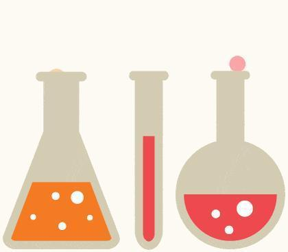
一年一度的毕业季即将来临，而手机行业也将迎来热潮。近期锤子的春季新品发布会完美举行，又一次将人们的眼球拉向了它，完成了一次完美的逆袭。
话不多少以图为证：
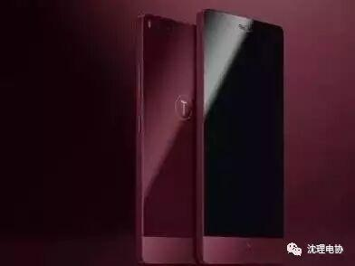
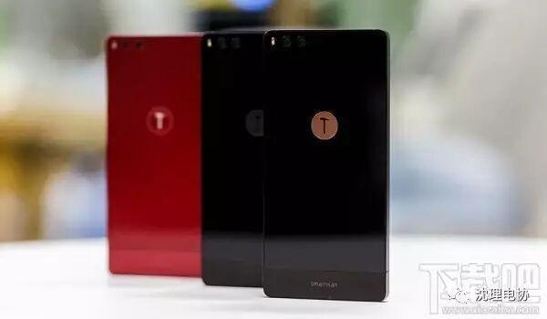
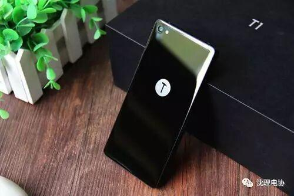
这些外观的改变一定能让大家大饱眼福吧！！！外观上已经吸引住大家了吧！O(∩_∩)O
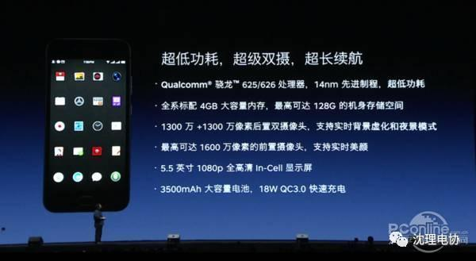
坚果Pro搭载高通骁龙625/626处理器，采用一块5.5英寸1080P显示屏，支持最高4GB RAM+128GB ROM的存储组合，后置为双1300万像素摄像头，支持背景虚化和夜景模式。
绝招
请输入标题 bcdef
【 福利】
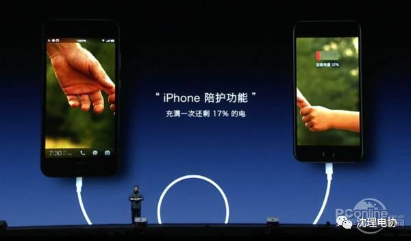
作为一款中端机，坚果Pro还拥有3500mAh大电池，支持QC 3.0快充，最高输出规格18w，还可以反向给iPhone充电。
拥有苹果的小伙伴们值得拥有。
请输入标题 abcdefg

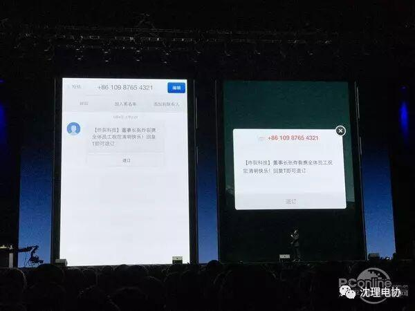
我们经常会收到一些不知道从何而来的短信，一般而言这些短信后面都有“回复T/TD退订”的字样，但这其中有可能隐藏着文字游戏，打个比方，当你回复“T/TD”的时候未必退订成功，但回复“复T/TD”反而成功退订了。Smartisan OS3.5/3.6将和信析包进行合作，通过大数据智能对这种类型的短信分析，并成功进行退订。
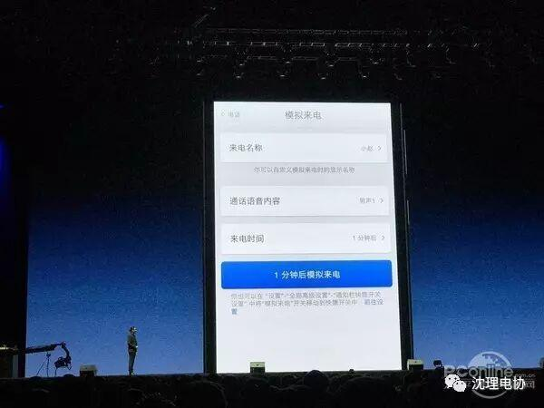
模拟来电的作用不必多说，Smartisan OS3.5/3.6能够自由设置模拟来电的时间，还支持多种声音、不同方言的通话语音。整体而言，锤子的模拟来电功能可控性高，方便我们日常进行“脱险”操作。
（小编认为：强大的模拟通话功能一定能为大家免除好多烦恼吧！这也是）
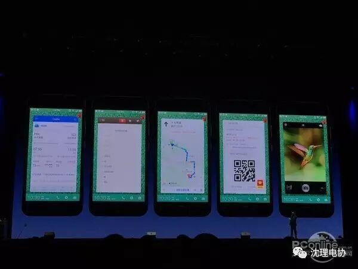
这是一项有趣的功能，我们可以移动我们常用的应用，并且把它“钉到”锁屏界面上，这样只要点亮屏幕就能看到其中的关键信息，打个比方，我们可以把在网络上订的电影票“钉”在锁屏界面上，到了电影院我们只要一点亮屏幕就能使用，快速便捷。
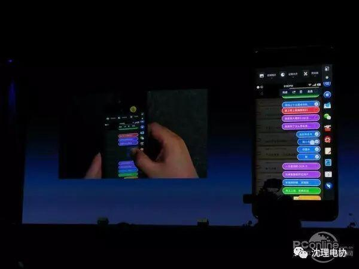
很多人都有过这样一种情况：很多人在做一件事情的时候，脑子里忽然有一瞬间的想法一闪而过，如果此时不能及时记录下来，那么很快就会把这一闪念遗忘掉。而这个闪念胶囊就是为了解决这个事情而存在的，本质上是一个语音备忘录，但是功能更加丰富。
值得一提的是，闪念胶囊还内置语音包，在网络信号不好的时候就能自动启用，并保存语音文件，但识别率会降低，但当你到了网络信号好了之后，它便会再次对语音进行识别，提高正确率。
经过小编的介绍相信大家都对它会有一些兴趣啦！个人感觉新科技还不错！！
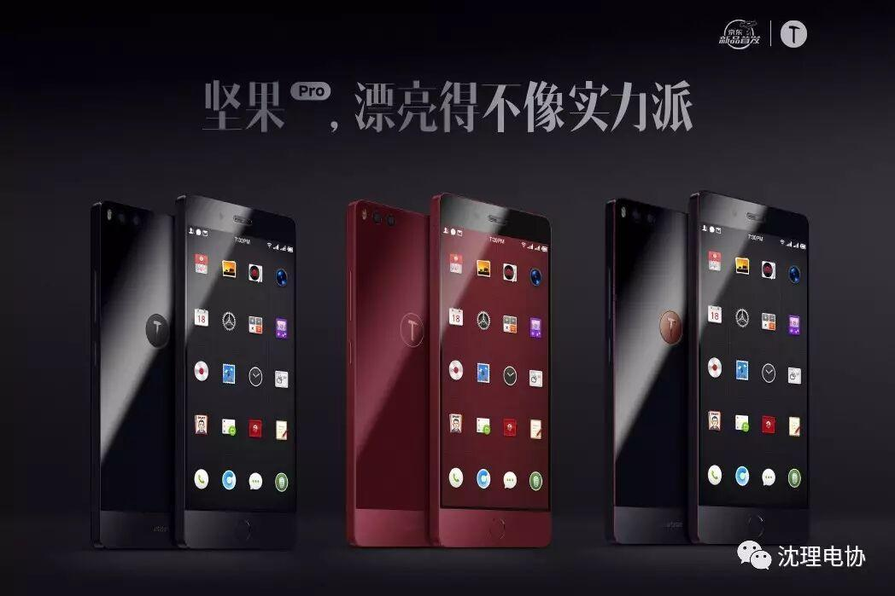


部分图文来源于网络
编辑人：信息部——刘舒宇